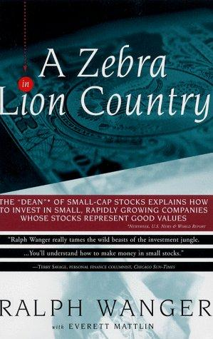

拉尔夫·万格（Ralph Wanger）在麻省理工学院取得学士和硕士学位，1960年加入芝加哥的Harris Associates，后来长期管理Acorn Fund。按基金生涯常用的统计口径，他从1970年至2003年的年化回报约16.3%，同期标普500约12.1%；这项纪录跨越三十余年，也伴随小盘股周期和基金规模变化。1992年他成立Wanger Asset Management继续管理Acorn体系，2000年公司被Liberty Financial收购，万格2003年退出一线。1997年，他与财经作家埃弗雷特·马特林（Everett Mattlin）合写《A Zebra in Lion Country》，由Simon & Schuster出版，共251页。书中不少材料来自万格写给Acorn股东的季度信。目前没有查到正式中文版本，中文标题采用自然译名《狮子国度里的斑马：万格投资生存指南》。
斑马比喻解释了职业基金经理的两难：待在兽群中央，草少但不容易被狮子捕食；走到边缘能吃到新草，也更可能成为目标。对经理而言，“中央”是拥挤的大盘股和接近指数的组合，偏离共识则可能带来超额收益，也可能带来落后、赎回和失业。万格没有因此主张孤注一掷。他管理的组合通常持有两百多家公司，用广泛分散控制单只小公司的经营风险；真正偏离市场的地方是研究对象和主题，而不是把全部资本压在一两个名字上。他还强调客户结构必须允许这种偏离：如果持有人把短期落后当成方法失效，基金会在主题成熟前被迫出售。经理的风险预算因此也包含职业和赎回风险，不只是股价波动。书名谈“生存”，因为没有存续时间，再好的长期主题也无法兑现。
万格的选股顺序是先找可持续的经济趋势，再找处于受益位置的小公司。他称之为“生态位”思考：人口变化、技术采用、监管或成本结构先改变行业环境，企业再凭渠道、管理和资本结构把趋势转成利润。他常避开技术产品的直接制造商，转而寻找利用新技术降低成本的企业；也警惕竞争对手过于聪明的行业。书中用硬盘行业说明好创意如何变成坏投资：一项真实而重要的技术引来七十多家公司，每家都需要很高市场份额才能生存，需求增长最终抵不过供给增长。另一个比喻把股价比作在中央公园乱跑的狗，企业基本面则像始终朝目的地前进的主人。短期无法预测狗会扑向哪里，分析者却可以检查主人的方向和速度——收入、现金流、市场份额与资产负债表。
小盘股方法有明确边界。研究覆盖少可能产生错价，也意味着信息不完整、买卖价差大和退出困难；基金规模增加后，许多小公司即使判断正确，也不足以影响整体收益。两百多只持仓能降低单一公司风险，却可能让几家公司最成功的判断被稀释，管理团队还必须持续覆盖大量企业。业绩比较还要注意起止日期、费用、小盘股基准与容量限制，不能只拿长期平均值与标普500得出普遍结论。万格的长期纪录说明主题研究和分散组合可以共存，却不能证明小盘股会在所有时期持续跑赢。阅读本书时，最好把“站到斑马群边缘”翻译成可量化的约束：单一仓位上限、组合流动性、主题相关性和允许落后指数的期限。这样，动物比喻才会从机智的股东信变成可执行的风险管理。